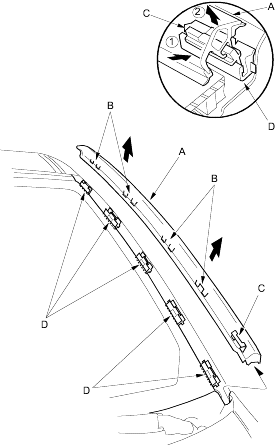
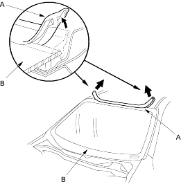

- Put on gloves to protect your hands.
- Wear eye protection when removing the glass with piano wire.
- Use seat covers to avoid damaging the seats.
- Pull up the side trim (A) to release the clips (B and C) from the retainers (D), then remove the trim from each side of the windshield.

- Remove the moulding (A) from the upper edge of the windshield (B). If necessary, cut the moulding with a utility knife.

- If the old windshield is to be reinstalled, make alignment marks across the glass and body with a grease pencil.
- Pull down the front portion of the headliner (see page 20-37). Take care not to bend the headliner excessively, or you may crease or break it.
- Apply protective tape along the edge of the dashboard and body. Using an awl, make a hole through the rubber dam and adhesive from inside the vehicle at the corner portion of the windshield. Push a piece of piano wire through the hole and wrap each end around a piece of wood.